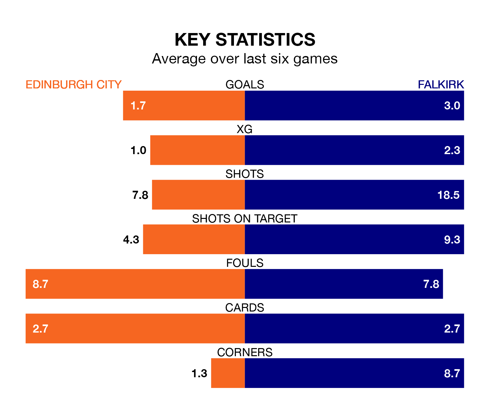

Mid-season relegation candidates Edinburgh City face a challenge against high-flying Falkirk at the Meadowbank Stadium on Saturday.
Edinburgh City are rooted to the bottom of the League One table, and have picked up two wins and three draws in their 19 games to date.
The Bairns, meanwhile, are top of the standings with 52 points, having won 16 and drawn four of their first 20 matches.
With 49 goals in 20 games so far this season, Falkirk are the league's highest scorers with 2.5 goals per game. And they are conceding fewer than average, letting in 11 goals at a rate of 0.6 per game.
Edinburgh, meanwhile, are below average scorers, with 1.3 goals per game, compared to a league average of 1.6. They have conceded 2.8 goals per game.
City are in bad form in League One, with one win and five losses from their last six games.
With six wins and no losses over that period, the Bairns's form is much better – they have taken 18 points from 18, compared to the home side's three.
With Sam Long between the sticks, the visitors can rely on one of the league's safest pair of hands. He has kept seven clean sheets in his 11 appearances this season, and no 'keeper has prevented the opposition scoring more often in League One.
In Edinburgh's net, Andrew McNeil has one clean sheet in nine games. He has conceded a goal every 34 minutes, five times as often as the 165 minutes between goals for Long.
Over the last year, Edinburgh and Falkirk have played each other on four occasions. Edinburgh won one of them and Falkirk the other.
On average, Edinburgh scored 1.0 goal and the Bairns 1.8 in those matches.
Their last meeting was on November 11, when Falkirk won 2-1 at home.
Edinburgh's last match was on January 6, a 3-1 loss against Alloa Athletic, with Ouzy See getting the goal for Edinburgh.
Falkirk beat Cove Rangers 4-0 last time out, on Tuesday, with Callumn Morrison (two), Gary Oliver and Liam Henderson on the scoresheet.
Updated: 13:38 (UTC), 10/01/24